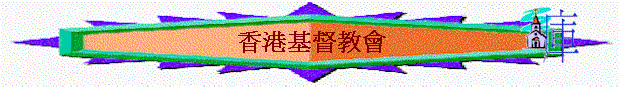

[ 認識道教ppt ] [認識佛教ppt ] [ 認識回教ppt ]
香港基督教會(COC)
A.創辦人
a.源自波士頓基督教會，創辦人是Kip
Mckeam ，而後來他發展全球的「國際基督教會」(ICOC)
b.香港的建立人：祈思國
B.創教由來
On June
1,1979, in Bob & Pat Gempels' living room, Kip McKean calls 30
"would-be disciples" to be totally committed to Christ. (The church
later becomes known as the Boston Church of Christ.)
～當時由KIP
MCKEAN 及ELENA MCKEAN 帶領一個小組開始，後成立星期日的聚會，人數由30
人增至11年後的5000 人。
～現時這教會已發展至世界各處，包括埃及的籣羅、香港、台灣、倫敦、伯明瀚，星加坡、瑞典的司德歌甫摩、墨西哥城、牙買加的京士頓城、三藩市、多倫多等地。
～1987 年9 月，有一行12
人的傳道團自波士頓來港傳教，以大學生交換計劃來港。
～至1990年7 月，主日崇拜人數約有500
多人。
C.現時情況
a.人數
(1)國際基督教會：2007年90,130會眾，分佈在不同地方，主要在美洲，亞洲地方如香港、台灣、新加坡也有他們的會員
(2)香港基督教會：2006年有1883會眾
b.慈善服務
～寰宇希望(Hope
Worldwide)是國際基督教會成立的組織，主要作扶貧工作
D.教派信條
a.神是三位一體的真神
～聖父、聖子、聖靈是三個位格，同一本質的真神。
b.耶穌是我們的救主
～神的獨生兒子耶穌基督，是我們的救主及生命之主，祂為我們的罪釘在十字架上，死後第三天復活。
c.聖經是神所默示的
～聖經是
神藉著聖靈所默示的，是門徒生命及教會教義的唯一依據。
d.救恩是神的恩典
～救恩是本乎
神的恩典和耶穌基督的寶血，藉著人的信心、順服基督的主權、悔改並且全人受浸，罪才可以得赦免。
e.神在世上建立教會
～神在地上建立了一個普世教會，門徒要竭力遵行聖經的教導，積極投入建立基督的身體，重視教會聚會的時間表，與弟兄姊妹建立互愛互助的關係，彼此激勵成長。
f.愛神愛人是最大誡命
～門徒要持守的最大誡命，是「盡心、盡性、盡意愛神，並要愛人如己」。
g.門徒訓練幫助成長
～門徒受洗後，都要接受其他門徒的教導。門徒之間要有坦誠和緊密的關係，並實踐聖經中有關「彼此」的經文，互相幫助，活出基督的樣式。
h.門徒需要彼此教導
～門徒訓練可以通過一對一的教導、互勉，或小組形式進行。大家要彼此教導，互相承擔。
i.奉獻是甘心樂意
～我們的金錢、時間和才幹，都是神所賜的。在金錢方面，門徒應作十一奉獻；同時，我們也會以神所賜的才幹和能力服侍教會，作神的好管家。
j.信仰是婚姻的基石
～神所賜的婚姻是美滿的。因此，門徒約會的對象應是弟兄姊妹，戀愛關係也應保持純潔。
k.傳福音是門徒的使命
～門徒的職份和使命是「尋找、拯救失喪的靈魂」，使萬民作耶穌基督的門徒。
G.爭議理論
a.要受浸才能得救
Both
believe that a person must be baptized by immersion for forgiveness of sins in
order to be saved, and both practice baptism of adults only -- they do not
baptize infants or children who have not reached "the age of
understanding". The ICC has a unique teaching, though, that a person must
be "baptized as a disciple" in order to be saved.
This means that a person must have what the ICC views as the correct
understanding of baptism at the time of baptism, must have fully repented of
their sins, and must have committed to living as a disciple of Christ, prior to
baptism, or the baptism is invalid and the person unsaved.
--
Kip McKean Perfectly
United 1987 Boston Women's Retreat
b.要遵行主吩咐作真門徒才得救
"I
taught what was clear in Acts 11:26: SAVED = CHRISTIAN = DISCIPLE, simply
meaning that you cannot be saved and you cannot be a true Christian without
being a disciple also. I taught that, to be baptized, you must first make
the decision to be a disciple, and then be baptized.... I taught that their
baptism was invalid because a retroactive understanding of repentance and
baptism was not consistent with Scripture."
-- Kip McKean Revolution
through Restoration Discipleship Magazine, April
1992
c.是唯一教會
There
are several things that make us unique. First, we are committed to continually
searching the Bible for truth about our lives and God's will for us as His
church.
Second,
we believe and expect every member of the church to be fully committed to living
according to that truth. These convictions, as straightforward and obvious as
they may seem, do not characterize the convictions of most of the religious
world around us. To our knowledge, we are the only group that teaches the
biblical principle of discipleship as a necessary part of the salvation process.
We believe that an individual is not a candidate for baptism, and,
therefore, salvation, unless he or she is ready to repent of sin and make the
commitment to live each day of his or her life as a disciple of Jesus Christ.
參考資料：
http://www.icoc.org
http://www.icocco-op.org/
http://www.hongkongcoc.org/church_history.php
馬國棟牧師異端研究資料
[ 認識道教ppt ] [認識佛教ppt ] [ 認識回教ppt ]